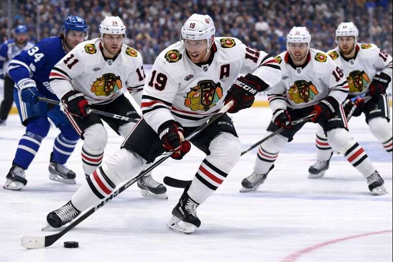

The Battle of Ontario has produced tight, physical hockey all season long, and there's no reason to expect anything different Wednesday night at Canadian Tire Centre. Toronto heads to Ottawa as heavy underdogs sitting at 32-35-14, officially eliminated, playing out the string. Ottawa sits at 43-27-11 with a playoff spot locked up and seeding still on the line. The market is treating this like a blowout waiting to happen, and the Leafs +1.5 at -145 says the oddsmakers expect a comfortable Senators win. That's exactly where the value lives. These two teams don't play comfortable hockey against each other.
Toronto and Ottawa have met three times already this season, and every single game has been decided by two goals or fewer. The Leafs won a wild 7-5 game at home on December 27, then dropped a 5-2 result in Ottawa on March 21. That March loss is the widest margin of the series, and even that was a one-goal game heading into the third period before Ottawa pulled away late. The first meeting on March 1 was another tight affair that the Senators won. The point is simple: regardless of where these teams sit in the standings, when they play each other, the games are competitive. Rivalry hockey does that. Both locker rooms know each other inside and out, the hitting picks up, and neither team wants to get embarrassed in a Battle of Ontario game.
That pattern matters when you're looking at a puck line. You don't need Toronto to win this game outright. You just need them to keep it within one goal or pull the upset. Given that every meeting this season has been a close affair, asking the Leafs to stay within the puck line feels like the most likely outcome, not some longshot scenario.
Here's something the market is overlooking. Joseph Woll has posted a .904 save percentage and a 3.22 GAA across 36 starts this season. Those aren't elite numbers, but they're competent, and more importantly, they're better than what's on the other side. Linus Ullmark has had a rough year in Ottawa. His .891 save percentage and 2.73 GAA across 49 starts tell the story of a goaltender who has been leaking goals at a rate you don't typically see from a starter on a playoff team. Ullmark's GAA is lower because the Senators are a significantly better defensive team in front of him, but that save percentage gap is real. Woll is stopping a higher percentage of the shots he faces, full stop.
When you're betting a puck line, goaltending is everything. You need the underdog's goalie to keep the game close long enough for the puck line to hold. Woll has done that all year. He's not going to pitch a shutout, but he's not going to let in five soft ones either. He gives Toronto a chance to stay in the game, and that's all +1.5 requires. Meanwhile, Ullmark at .891 means he's giving up goals that other starters save. If Woll stops one or two more than Ullmark on a given night, this game stays tight. The goaltending edge people assume Ottawa has simply isn't there right now.
The easy narrative is that Ottawa needs this game for playoff positioning and Toronto doesn't care. But it's never that simple in the final week of the regular season. The Senators have clinched their spot. They're playing for seeding, sure, but there's also a real argument that a team headed into the playoffs doesn't want to risk injuries in a meaningless regular season game against a physical divisional rival. Don Bacon's coaching staff has to balance the need for momentum with the need to keep Tim Stutzle, Brady Tkachuk, and Ullmark healthy heading into the first round. Don't be surprised if you see shortened shifts for key players and an earlier hook on the goaltender if the game gets out of hand in either direction.
Toronto, meanwhile, has a different kind of motivation. This is the last Battle of Ontario of the year. It's the last time several of these players will wear the blue and white together before a summer of roster turnover. Auston Matthews is out with a season-ending injury and Anthony Stolarz is done for the year, but the players who are healthy, guys like John Tavares with his 30 goals and William Nylander who's been creating all year with 47 assists, those guys aren't mailing it in. The Leafs have been competitive even during this five-game losing streak. They've been in most of these games. They just haven't been able to close. Staying within a goal of Ottawa in a rivalry game is a different ask than winning, and it's one this group is capable of.
Tim Stutzle has been a monster this season. His 34 goals and 83 points through 80 games represent a legitimate star-caliber campaign, and he's the engine driving Ottawa's playoff push. Brady Tkachuk has chipped in 22 goals and 59 points across 60 games when healthy, adding the physicality and net-front presence that makes Ottawa's top six so difficult to handle. There's no question the Senators have more offensive talent than Toronto at this point in the season.
But talent doesn't always translate to margin of victory, especially in rivalry games where intensity levels the playing field. The Leafs held Stutzle to reasonable production in their earlier meetings this season. Toronto's defensive structure under Craig Berube isn't elite, but it's organized enough to make Ottawa work for their chances. The 292 goals against on the season is an ugly number, ranking 31st in the league, but a lot of that damage came during the mid-season free fall when the team had given up on the playoff chase. In recent weeks, with nothing but pride on the line, the compete level has been higher. That matters in a one-game sample, which is all we're betting on here.
The juice is heavier than you'd normally want to lay on a puck line, and that tells you the market agrees this game should be close. When the line is priced at -145, the oddsmakers are essentially saying that a one-goal Ottawa win or a Toronto outright win are the most likely outcomes. The only way this bet loses is if Ottawa wins by two or more goals. Given the season series, given the goaltending matchup, given the rivalry factor, and given Ottawa's potential to rest key players with the playoffs on the horizon, a multi-goal Ottawa victory is the least likely outcome on the board.
At 2.5 units, this is a confident play. Every data point supports the puck line covering. The season series has been tight in all three meetings. Woll has outperformed Ullmark in save percentage. Ottawa's motivation is muddied by playoff rest concerns. And Toronto, even in a lost season, has competed hard in Battle of Ontario games. You're getting a rivalry game where the underdog's goaltender has been the statistically better performer, the season series has been consistently competitive, and the market is pricing the most likely outcome, a close game, into your favor. The Leafs cover if they win, lose by one, or push this to overtime. That's three paths to cash in a game that's projected to be tight.
The Pick
Toronto Maple Leafs +1.5 at -145 (2.5 units)